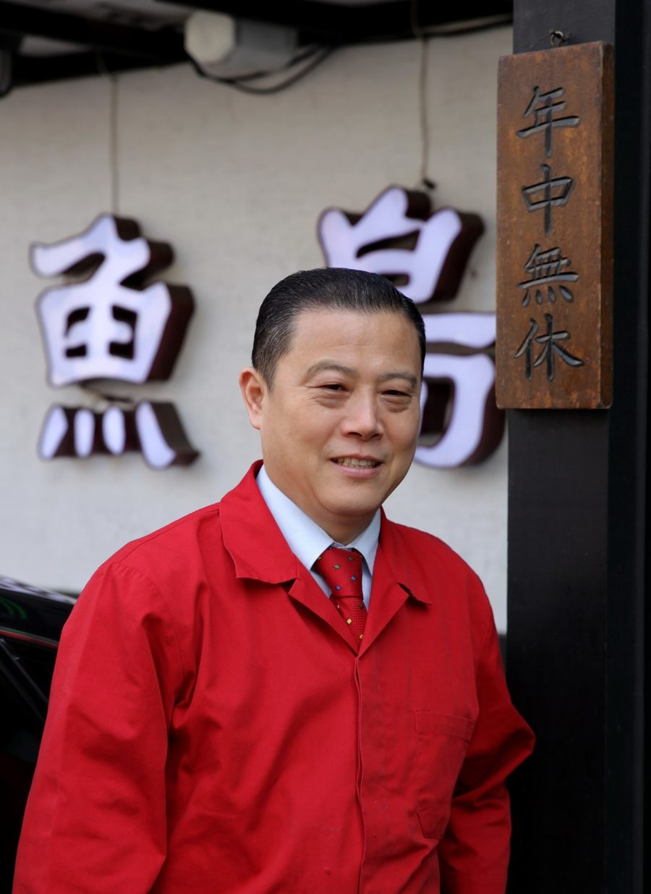
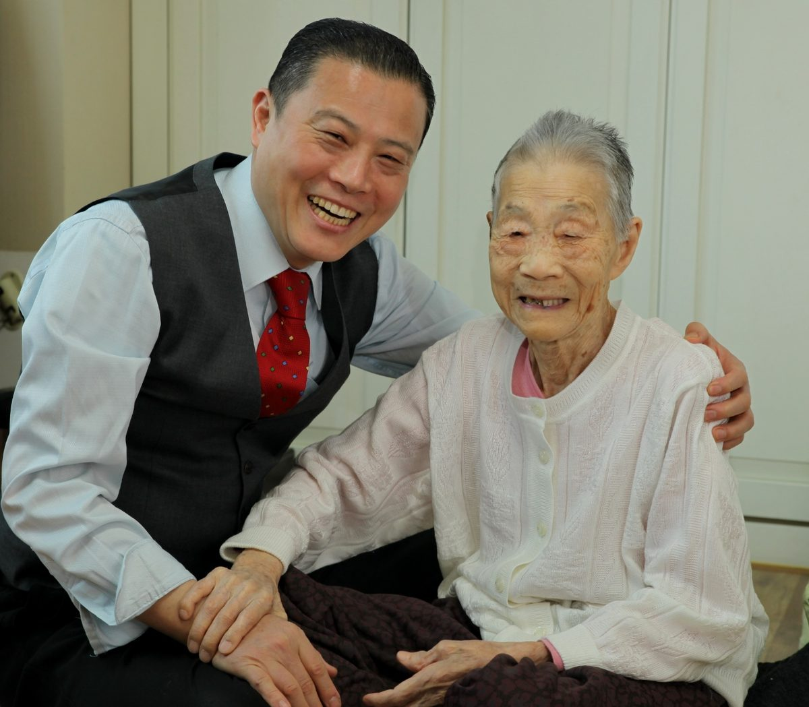

자연산
그날 들어온 자연산 생선만을 고집합니다. 좋은 재료 앞에서 타협하지 않는 것이 첫 번째 원칙입니다.
논현동 · 자연산 숙성회 · Since 1990
열여섯 살, 설거지로 시작한 주방.
반세기 한결같이 주방을 지켜 온 배정철 대표와,
손님 한 분 한 분이 함께 쌓아 온 나눔의 이야기입니다.

“저희 집에는 사장이 없어요.
모두가 동료일 뿐이죠.”
전남 장성에서 6남매의 막내로 태어났습니다. 다섯 살에 아버지를 여의고, 어머니 홀로 키운 집안 형편 탓에 학업을 이어가지 못했습니다. 열여섯 살이던 1978년 경기 안양의 한 일식집에서 주방 일을 시작했고, 이후 십여 년 동안 서울의 이름난 일식집을 거치며 설거지와 허드렛일 속에서 어깨너머로 칼과 생선을 익혔습니다.
1990년, 자신의 이름을 건 어도(魚島)를 논현동에 열었습니다. 자연산 생선을 손질해 알맞게 숙성시킨 두툼한 회는 이곳의 상징이 되었고, 운동선수와 방송인을 비롯한 많은 이들이 찾는 집이 되었습니다.
그는 지금도 명함에 ‘사장’ 대신 조리부장이라 적고, 직원들에게도 대표라 부르지 못하게 합니다. 쉬는 날 없이 주방을 지키는 것, 그것이 그가 아는 가장 정직한 일입니다.
타협하지 않는 것들이 있습니다
그날 들어온 자연산 생선만을 고집합니다. 좋은 재료 앞에서 타협하지 않는 것이 첫 번째 원칙입니다.
살이 가장 맛있는 순간을 기다려 썹니다. 두툼하게 썰어도 부드러운 숙성회는 오랜 손의 감각에서 나옵니다.
설거지부터 시작한 주방을 대표가 된 지금도 직접 지킵니다. 반세기 한결같은 마음입니다.

다섯 살에 아버지를 여의고 어머니 품에서 자랐습니다.
가족과 함께 상경했지만 가정 형편으로 학업을 중단했습니다. 중학교 시절 친구와 “너는 선생이 되고, 나는 돈을 벌어 장학금을 보내겠다”고 약속했습니다.
경기 안양의 일식집에서 일을 시작했습니다. 이후 십여 년간 서울의 유명 일식집을 거치며 기술을 익혔습니다.
자신의 이름을 건 가게를 열었습니다. 개업 한 달 만에 자리가 가득 찼습니다.
아내 김선미 씨의 제안으로 손님 한 분당 성금을 적립해 서울대병원에 저소득층 환자 치료비를 전하기 시작했습니다.
수학여행 버스 사고를 계기로 순천 효천고에 장학금을 보내기 시작해 18년간 2억 2천만 원을 전했습니다. 어린 시절 친구와의 약속을 지킨 것입니다.
‘나눔과 봉사의 주인공’으로 국민포장을, 국세청으로부터 아름다운 납세자상을 받았습니다.
누적 후원 11억 원을 넘기며 병원 후원 활동의 얼굴이 되었습니다.
어머니께 매일 쓴 손편지를 엮어 책으로 냈습니다.
2018년 11월, 강남구청으로부터 아름다운 기부상을 받았습니다.
어머니 이야기를 담은 책을 《엄니는 104살》로 다시 펴냈습니다.
스승의 날, 18년간 장학금을 보내 온 효천고에서 명예교사로 위촉되었습니다.
올해도 서울대병원에 1억 원을 전달했습니다. 지금까지 700명이 넘는 환자가 치료를 받았습니다.
“식당을 찾아주신 고객들의 따뜻한 마음이 모여
누군가의 생명을 살리는 기적이 됐습니다.” — 배정철, 2026년 서울대병원 후원금 전달식에서

다섯 살에 아버지를 여읜 뒤 6남매를 홀로 키우면서도 이웃과 나누며 살던 어머니. 그는 자신의 나눔이 그 모습에서 시작됐다고 말합니다.
어머니께 7년 동안 매일 손편지를 써 2,554통을 모았고, 그 편지들은 한 권의 책이 되었습니다.
서울대병원 누적 후원금 (억 원)
각 연도 언론 보도 기준
1999년부터 매년. 얼굴 기형 어린이 수술비로 시작해 형편이 어려운 환자들의 치료비로 이어졌습니다. 손님 한 분당 1~2천 원의 성금과 매출 일부로 마련합니다.
순천 효천고를 비롯한 6개 고등학교, 순천향대·고려대·가톨릭대 등에 장학금과 치료비를 후원해 왔습니다.
20년 넘게 동네 어르신 수백 분께 매달 식사를 대접하고, 복지시설에 어죽과 초밥을 보내 왔습니다. 생선뼈를 밤새 고아 끓인 어죽입니다.
아내의 제안으로 시작된 나눔에 세 자녀도 아르바이트로 모은 돈을 보탰습니다. “기부는 혼자의 힘으로 할 수 없다”는 것이 그의 말입니다.
나눔과 봉사 부문
국세청
서울대학교병원
강남구청
전남 순천 효천고등학교